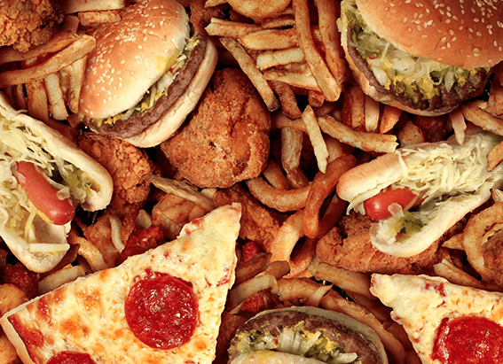
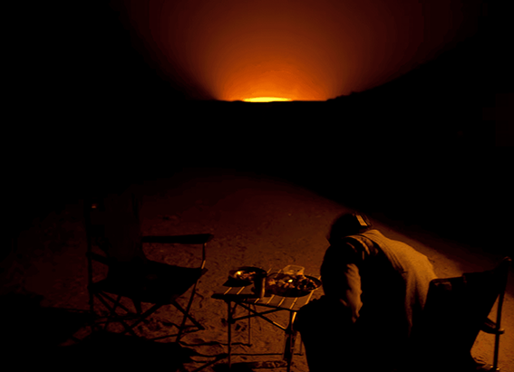

NATIONAL GEOGRAPHIC
Discover the Best of Tokyo
TRAVEL
Wildlife
The Izu Islands chain, south of mainland Tokyo, is a mellow change of pace to the city. Besides the possibility of spotting dolphins, humpback whales, and sperm whales here, islands like Miyake-jima and Hachijo-jima teem with birdlife. Izu thrush, Iijima warbler, and White's thrush are endemic, while various types of albatross, booby, and petrel can be spotted at sea.
Off the Beaten Path
An hour west of central Tokyo, in Kanagawa Prefecture, hiking trails wind through stunning mountain scenery in Tanzawa-Oyama Quasi-National Park. In the small town at the foot of the 1,254-meter Mount Oyama, you'll find traditional inns; a historic temple and shrine; and a rich heritage of Noh theater, a form of musical drama featuring masked actors that dates to the 14th century.
Cultural Site
Reopend in April 2018 after a six-month renovation, the Edo-Tokyo Museum in Ryogoku -Tokyo's sumo heartland-brings to life Edo-era Tokyo (1603-1868) and the years of modernization that followed with well-explained exhibits that include reconstructions of Edo housing and dioramas of the city.
Best Day Trip
An hour southwest of central Tokyo, Kamakura was the de-facto capital during the era of the same name (1185-1333), and remnants from those days make it a must visit. The highlight is the Great Buddha statue at Kotokuin temple, but it also features magnificent shrines like Tsurugaoka Hachimangu.
Most Iconic Place
Nothing encapsulates modern Tokyo like the Shibuya Crossing at night. When the lights change from red to green (or blue to use the Japanese), crowds of commuters, partygoers, and shoppers cross the main section from six directions against the kind of neon-lit highrise backdrop Tokyo dreams are made of.
Late Night
Unleash your inner diva at karaoke. Rent a booth at a karaoke chain like Big Echo for a private space and access to thousands of songs from J-pop to punk searchable and selectable in English. To keep the energy levels up and inhibitions down, there's a long menu of party food and drinks to choose from, too.
UNESCO Site
A 28-hour ferry journey 620 miles (1,000 kilometers) south of mainland Tokyo, the Ogasawara Islands are the most remote area under Tokyo's administration. In 2011, they were added to the World Heritage list for the wealth of their ecosystems, which support the critically endangered Bonin flying fox (a bat), 195 endangered bird species, and more than 400 native plant taxa.
Neighborhood to Explore
Kichijoji, a 25-minute train ride west of Shinjuku, has strong hipster credentials thanks to its mix of used clothing stores, record shops, artisanal cafes, and craft beer joints. The area also offers Inokashira Park, home to street vendors and performers on weekends and the acclaimed Ghibli Museum, where highlights include viewings of a Studio Ghibli animated short by anime legend Hayao Miyazaki and a rooftop garden.
Historic Site
Initially built in the 1600s, Koishikawa Korakuen garden is one of many fine examples of traditional landscaping in Tokyo. The pathways around its central pond lead visitors through seasonal sights such as a small iris garden that blooms in June, a weeping cherry tree that flowers pink in late March, and a grove of ume that in early February hints at the start of spring with delicate pink, red, and white petals.
Best View
At 2,080 feet (634 meters), Tokyo Skytree is the second-tallest structure in the world after the Burj Khalifa in Dubai, and the 360-degree view from its upper observation deck 1,476 feet (450 meters) above the east of the city gives an unparalleled perspective on Tokyo's sprawling scale.
Comments :
- john Very good
- john Very good
Leave a Reply
Your email address will not be published. Required fields are marked*
Related posts:
-
Experience searching for ancient signs of life on Mars
What is this? NASA’s Perseverance rover has touched down on Mars. National Geographic’s new augmented reality (AR) experience on Instagram allows viewers to become one with the rover as it searches
View article -
Ultra-processed food isn't just bad for your health it messes with your mind
Although many ultra-processed foods soda, candy, energy bars, fruit-flavored yogurt, frozen pizza, and frozen meals can satisfy cravings for sweet, fatty, salty foods, emerging research suggests these items are particularly bad
View article -
This 'Gate to Hell' has burned for decades. Will we ever shut it
Ten years ago, National Geographic Explorer George Kourounis climbed into the Gate to Hell. The 230-foot-wide, 100-foot-deep pit in north-central Turkmenistan is formally known as the Darvaza Crater
View article